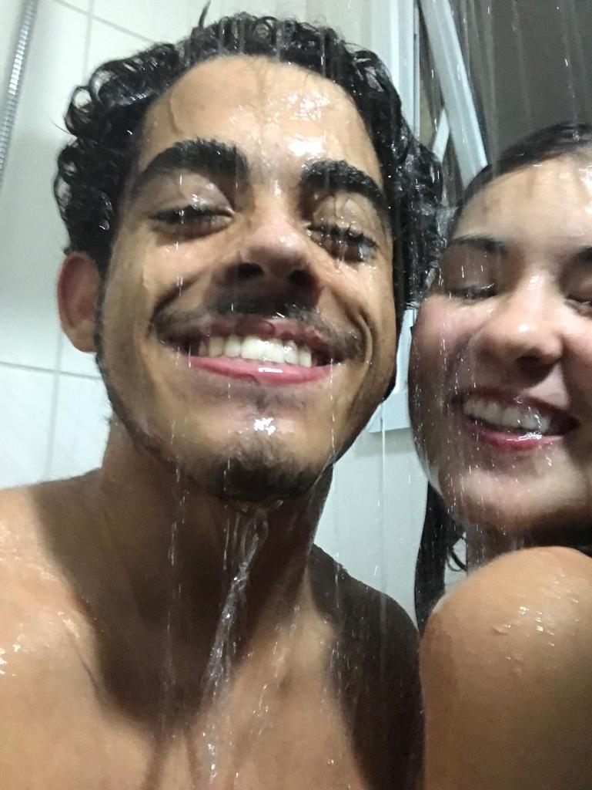

"Conforto é uma das palavras-chave da nossa relação, nunca fiquei tão à vontade com alguém quanto eu fico com você, amor. Honestamente eu me sinto mais confortável quando eu estou com você do que quando fico sozinho em casa.
Nosso primeiro banho junto foi super especial, lembra? Eu era meio inseguro quanto ao que você ia pensar do meu corpo fora de um contexto de tesão, sabe :( mas o importante é que hoje uma das coisas que eu mais gosto de fazer com você é ir pro banho :)
Você lembra de cantar pra mim né, amor? Aquela minha playlistzinha feita na malandragem pra ver se você me deixava ouvir seu canto maravilhoso deu certo hehe. Muito obrigado por cantar pra mim, tá amor? Eu acho tão lindo tanto você cantando quanto a atitude de você cantar pra mim ou comigo.
Quando você vira pra mim e pergunta qual vai ser a próxima música que a gente vai tocar no sarau, eu lembro de quando eu te liguei todo afobado pra gente se inscrever antes que acabassem as vagas pra tocar no trote e você aceitou relutante por insistência minha hihi. E deu tão certo, foi tão lindo... E eu amei muito você ter pego no microfone comigo, minha gata
você é minha inspiração."
